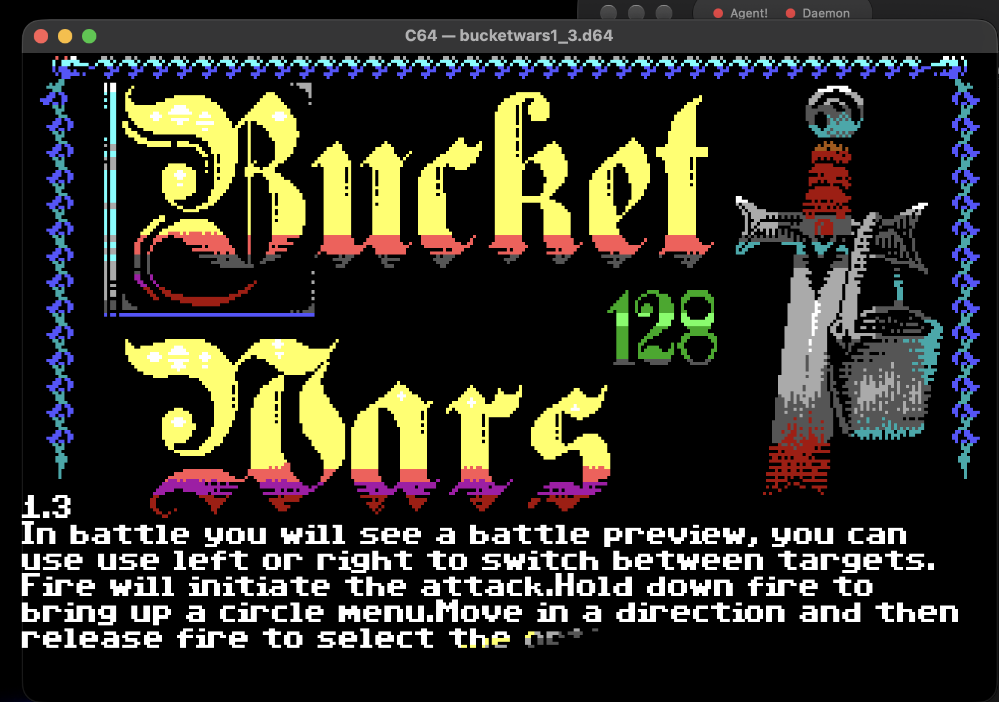
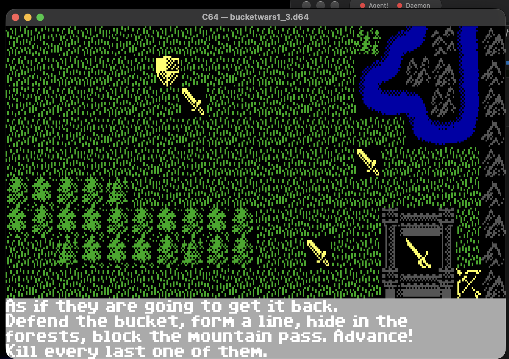

Commodore 128 built in
The same app is also a Commodore 128. Choose Machine ▸ Commodore 128 and it restarts in C128 mode with BASIC 7.0, 128K, the 40-column VIC-II screen and the 80-column 8563 VDC screen. View ▸ C128 Display (⌘4 / ⌘5 / ⌘6) switches the window between the two video outputs, like the input switch on a monitor. Needs the C128 ROMs (see below).


What's emulated
| 6510 CPU | Cycle-exact bus accesses, all documented and undocumented opcodes; passes Klaus Dormann's functional test. |
|---|---|
| VIC-II | Cycle-stepped: badlines, sprite DMA, border flip-flops, raster IRQ, all text and bitmap modes, sprite collisions. |
| SID 6581 | 3 voices, all waveforms, sync/ring, ADSR with real rate tables, resonant multimode filter, digis. |
| PAL / NTSC | 6569 (50 Hz) or 6567R8 (60 Hz); CPU, SID pitch, CIA clocks and drive timing follow. |
| 1541 drive | Drive 6502 running the original DOS ROM, two VIA 6522s, stepper head, GCR at the correct zone speeds. Reads and writes, so fast loaders and copy protection behave like the real thing. |
| 1581 drive | Device 9: 2 MHz 6502, 8520 CIA and WD1772 controller with the original 1581 DOS; D81 images, including formatting. |
| Datasette | TAP playback and recording at cycle precision, with automatic warp while the motor runs. |
| Fast loading | Instant Load copies KERNAL loads straight from the disk image; automatic warp while a drive motor runs. |
| Media | D64, D81, PRG, T64 and TAP. Drag a file onto the window and it autostarts. Changes are written back to the image. |
| Commodore 128 | Machine ▸ Commodore 128 boots C128 mode with BASIC 7.0: 128K and the 8722 MMU, 40 columns on the VIC-II and 80 columns on the 8563 VDC (ESC X switches; View ▸ C128 Display picks the 40- or 80-column output by hand, like the input switch on a monitor), FAST 2 MHz mode, GO64, disk boot. Needs the C128 ROMs (see below). No CP/M. |
| Modem | Dial Commodore and PC BBSes over telnet from the user port, SwiftLink or Turbo232 (up to 230,400 baud). Built-in terminal with PETSCII and ASCII/ANSI modes and XMODEM download/upload. |
Getting started
Download C64.app.zip from the releases page, unzip it and open it. It's a Universal app (Apple silicon and Intel),
signed with Developer ID and notarized by Apple. Requires macOS 14 or later.
Drag and drop a .d64 disk image onto the C64 screen to insert it in drive 8 and autostart it
(LOAD"*",8,1 + RUN). .d81, .prg, .t64 and .tap files work the same way.
Need something to test with? Download Laser Eagle v3
(.d64, 171 KB), a game by Todd Bruss, free to play — then drop it onto the C64 screen.
The Commodore ROMs are copyrighted and not included. On first launch the app looks in
~/Library/Application Support/C64Emu/ROMs and in a VICE installation, or asks you for a folder with
basic, kernal and chargen ROM files (and optionally the 1541/1581 DOS ROMs).
Preferred file names (files are matched by name prefix and must be exactly this size):
| Commodore 64 | |||
| BASIC | basic-901226-01.bin | 8 KB (8192 bytes) | required |
|---|---|---|---|
| KERNAL | kernal-901227-03.bin | 8 KB (8192 bytes) | required |
| CHARGEN | chargen-901225-01.bin | 4 KB (4096 bytes) | required |
| 1541 DOS | dos1541-325302-01+901229-05.bin | 16 KB (16384 bytes) | optional, drive 8 (also used in C128 mode) |
| 1581 DOS | dos1581-318045-02.bin | 32 KB (32768 bytes) | optional, drive 9 (also used in C128 mode) |
| Commodore 128 (in addition to the C64 ROMs above) | |||
| C128 KERNAL | kernal-318020-05.bin | 16 KB (16384 bytes) | needed for C128 mode |
| C128 BASIC low | basiclo-318018-04.bin | 16 KB (16384 bytes) | needed for C128 mode |
| C128 BASIC high | basichi-318019-04.bin | 16 KB (16384 bytes) | needed for C128 mode |
| C128 CHARGEN | chargen-390059-01.bin | 8 KB (8192 bytes) | needed for C128 mode |
| 1571 DOS | dos1571-310654-05.bin | 32 KB (32768 bytes) | optional, drive 8 in C128 mode |
Or build from source:
git clone https://github.com/AgentiLoop/c64.git cd c64 ./scripts/make-app.sh open build/C64.app
Keys
| Keyboard | |
| Esc | RUN/STOP |
|---|---|
| Page Up | RESTORE |
| Left Option | C= |
| Tab / Control | CTRL |
| Home | CLR/HOME |
| F1–F8 | F1–F8 |
| Backspace / Fwd Delete | DEL / INST |
| ⌘V | Paste text as typing |
| Joystick | |
| Numpad 8/2/4/6, 0 or Right Option | Joystick (port 2 by default, ⌘K swaps ports) |
| Machine & view | |
| ⌘J | Warp mode |
| ⌘P | Pause / resume (handy for screenshots) |
| ⌘1 / ⌘2 / ⌘3 | Full border / small border / no border |
| ⌘4 / ⌘5 / ⌘6 | C128 display: automatic / 40 columns (VIC-II) / 80 columns (VDC) |
| Disk drives | |
| ⌘D / ⌘E / ⌘N | Attach / eject / create a D64 in drive 8 (1541) |
| ⌘⇧D / ⌘⇧E / ⌘⇧N | Attach / eject / create a D81 in drive 9 (1581) |
| ⌘L | Instant Load on/off (copies files straight from the disk image; the directory and custom loaders still use the real drive) |
| Datasette | |
| ⌘T / ⌘⇧T | Insert a TAP / new blank TAP |
| ⌘⌥1–4 | Tape play / record / stop / rewind |